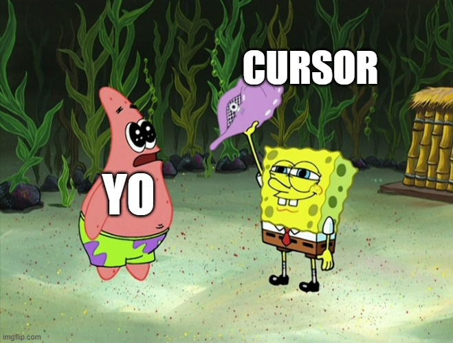
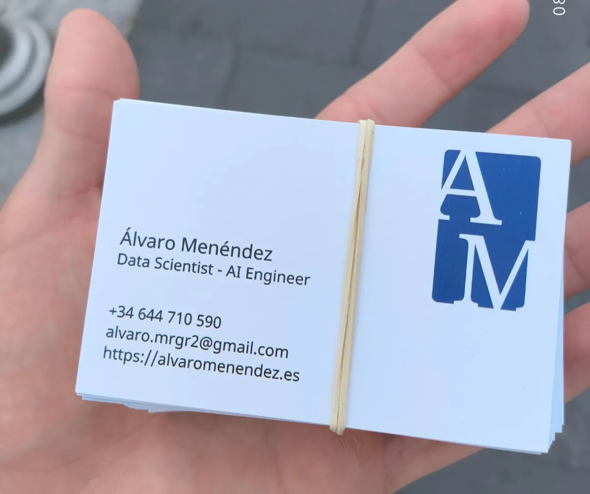

Hace tan solo 4 o 5 días iba a haber escrito una entrada para mi blog titulada 'About the battles we face'. Por pereza no lo hice, y no os imagináis cómo me arrepiento de ello.
En esa entrada quería hablar de mi situación personal estos últimos 6 meses, desde diciembre 2024 a junio 2025. Ha sido sin ninguna duda el periodo en el que más dudas e incertidumbre he sentido en mi vida, un golpe de bruces con la vida real. Un periodo de descarrilamiento, de perder el hilo y encontrarme con infinitas posibilidades pero a la vez incapaz de tomar ninguna. Me hubiera gustado particularmente haber escrito dicho post para ver la diferencia de perspectiva de hace unos días a ahora, ya que han sucedido cosas que han dado un giro de 180º a mi situación personal y mi manera de ver las cosas.
Estos últimos seis meses los he sentido como el día de la marmota (Gracias Jorge, te lo robo) y voy a explicar porqué. Acabé la carrera en diciembre del 2024, y al no tener ningún plan específico en Holanda decidí volver a España. Mi plan mental era el siguiente: trabajar como Data Scientist en Madrid hasta que en septiembre me fuera de nuevo a estudiar un Máster, preferiblemente a Copenhague, mientras ahorraba 1000e al mes para hacerme un colchoncito. Joder, qué bien sonaba ese plan y qué bueno hubiera sido.
Enero-Febrero 1/2
Estos meses me los tomé como tiempo de experimentación: tenía muchas ganas de encontrar un buen trabajo pero en vez de hacer la metralleta en Linkedin para solicitar a trabajos aleatorios decidí intentar emprender por mi cuenta. Conocí el mundo del 'Indie Developers', con referentes como Levelsio, Blake Anderson, Javi Lopez (Mi ídolo🤩), Marc Louvion y más, muchos más.
Si no conoces ese mundo, de lo que trata es de hacer dinero con cualquier forma de servicio online. Esto se llama SaaS (Software as a Service) o MicroSaaS, y las formas más comunes son aplicaciones móviles o páginas web, a menudo con suscripciones mensuales. Lo que me llamaba particularmente la atención era la aparentemente sencillez de los productos en comparación a la cantidad de dinero que se podía obtener con ellos. Estamos hablando de varios millones de ARR en los casos más extremos como CalAI o PhotoAI y una inversión de capital cercana a 0.
Por lo que he dicho parecía un mercado jugosísimo, así que decidí darme un mes para intentar hacerme un hueco en este mundillo. Descargué Cursor, el software más disruptivo de la década en el mundo tech sin ninguna duda. Había escuchado maravillas, prometía desarrollar software sin necesidad de escribir una línea de código, el ansiado 'vibe coding'.
Tenía una idea muy clara en mente: 'Una página web para practicar la pronunciación en inglés mediante clips cortos de películas famosas'. Visualizaba exactamente cómo quería que se viera la web, y la funcionalidad era aparentemente sencilla. No sabía como hacer la arquitectura del programa pero daba igual, la concha mágica (cursor) sabía la respuesta.

Los primeros prompts eran la leche, como un chute de una droga fuerte. 'Haz una página web en la que muestres un cuadro de video' → 'Ahora hazla más bonita' → 'Añádele una flecha para cambiar de video'. Lo mejor de todo es que funcionaba!! Le pedías cosas y aparecían en la pantalla por arte de magia!!
Conforme el proyecto crecía me vi obligado a crear nuevos chats por las limitadas ventanas de contexto de los LLM, y aquí surgieron los primeros problemas. Ahora, la concha mágica no seguía las ordenes tan bien como antes, y muchas veces creaba código duplicado. El mayor problema es que al haber delegado tanta cantidad de código, ya no era capaz de saber continuar por mi propia cuenta.
Lo que antes era mi mayor ayuda, se convirtió en mi peor enemigo:

Por no mencionar que había que pagar 20€/mes por la concha mágica, aunque por suerte yo encontré alguna manera de bypassearlo que más tarde parchearon (Los de cursor son duros de roer).
Total, que tras sudor y esfuerzo logré desarrollar y poner en producción mi aplicación. El problema? Los costes de mantenimiento: 8€/m el servidor de Heroku + 7€/m para la API de los clips. Vale, un coste bastante bajo pero no tenía ningún usuario ni ingresos.
Fast forward 3-4 meses tras investigar sin ayuda de la IA, llegué a la conclusión de que ese mismo servicio podía hacerlo estático, sin un servidor. Y descargando los videos de redes sociales, para así bajar los gastos a 0€.
Y así nació dailyclips.es. Es exactamente la misma aplicación del principio pero sin costes de mantenimiento, así que genial. No está terminada, pero funciona como MVP, y tal vez en algún momento me anime a acabarla. Sinceramente, si no la he acabado no ha sido por falta de tiempo sino por procrastinación, es una de las desventajas de esto del indie developing.
Y es que es verdad, una de las mayores dificultades del indie developing es la dificultad para llevar a cabo los proyectos sin ningún supervisor. En un trabajo normal tienes fechas límite, jefes y oficinas que hacen que trabajar en algo se sienta más urgente. En cambio, cuando trabajas por tu cuenta no tienes nada de eso, y al menos en mi caso fue muy difícil de llevar.
Además de la procrastinación, encontré muchos otros aspectos que no me gustaban del campo. Me di cuenta de que hay mucha competitividad: o las cosas que haces son de una calidad espectacular lo cual requiere esfuerzos extraordinarios, o nadie va a usar tu producto. Por otro lado, las ataduras a convertirse en 'creador de contenido'.
Una de las mejores maneras para promocionar tu producto son las redes sociales, aunque en mi caso no me sirvieron. Me creé una cuenta de Twitter en la que a lo largo de un mes llegué a postear 149 veces acerca de mi producto y conseguí 4 seguidores y menos de 10 likes. Seguramente si hubiera seguido posteando hubiera llegado a hacerme un hueco como 'influencer', porque al final lo que premian este tipo de plataformas es la constancia. Pero realmente es lo que quería? Obligarme a publicar varias veces al día aunque no aportara nada de valor? Volverme esclavo de las métricas intentando optimizarlas al máximo? A mi no me salía natural ni me parecía una meta clara, además que así te quitaba gran parte de la libertad que ofrecía esta manera de ganarse la vida.
Principalmente por estas razones decidí dejar este campo y buscar un trabajo 'de verdad'
2/2 Febrero - Marzo-Abril-1/2 Mayo
El día 21 de febrero publiqué en mi post una entrada titulada 'A note to my future employer', la puedes leer aquí. Ahí hablaba un poco del trabajo que había hecho hasta entonces y mis expectativas para el primer trabajo que encontrara.
Las primeras semanas me sentía animado a la hora de aplicar trabajos. Empecé por lo típico: mejorar mi CV y Linkedin añadiendo toda la experiencia relevante y teniendo una buena imagen. Después, dedicaba alrededor de 1-2h al día a mandar CVs, intentando sobre todo evitar consultoras big four o puestos que no fueran a beneficiarme a largo plazo (Lo de las consultoras es algo que acabé sucumbiendo a lo largo del tiempo). Solicitaba a puestos tipo 'Junior Data Scientist', o 'Desarrollador de Python'. Sucedía que, estaba recibiendo muy pocas respuestas. Había dos principales problemas, primero que NO había una oferta amplia de puestos en los que cuadrara mi perfil, y en los que sí, había muchas, pero muchas solicitudes. Un ejemplo es que para un puesto de 'Junior Data Scientist' en NTT data publicado hace 4 horas, había más de 100 solicitudes.
Me parecía raro que tras haber estudiado una carrera supuestamente puntera estudiada en el extranjero e incluso experiencia previa, me estuviera costando tanto encontrar un simple trabajo. Decidí publicar mi situación en Linkedin y el post explotó. Consiguió medio millón de visualizaciones, 760 me gustas y 75 comentarios de gente que me apoyaba y entendía mi situación.
Lo importante de los números no es que me hiciera 'famoso', sino el ver y darme cuenta que había mucha gente en mi misma situación, que había un problema de oferta y demanda, muchos perfiles para pocos puestos.
Es por eso que intenté diferenciarme de los demás. Empecé a publicar en Linkedin sobre las cosas en las que trabajaba, proyectos personales y demás. Conseguía visitas, seguidores, e incluso invitaciones a eventos. Me veo obligado a agradecer a Santiago Ampudia de Codemotion, quien me invitó hace varios meses al Hackaton Innovaxa 2025 y debido a ello se me abrieron muchas puertas y oportunidades, de hecho en Junio tengo un evento de EY gracias a él.
Fui a hackathones, a un total de 5: Inditex & Nuwe, Innovaxa (Axa), ZF Aftermarket & Motortec, CIC consulting - Santander y Datafest Spain - Banco Santander & Talenthackers.
Asistí al rededor de 15 eventos, destacando Codemotion y SouthSummit, dos de los eventos tech y emprendimiento más grandes de España. Conocí la comunidad nothiring gracias a Sergio Calderón, y estuve de mentee durante 3 sesiones con Alba Vicente. Muy agradecido a ambos. Gracias a nothiring, me hice amigo de Miguel López, Alejandro Marcos y Alejandro Sánchez con quienes más tarde acabaría asistiendo a uno de los hackatones ya mencionados (Datafest Spain)

Conocí la comunidad de Exponential, introducida por Alex Molás, Data Scientist a quien conocí en el hackaton de inditex. Es una comunidad muy nicho de españoles jóvenes emprendedores y ambiciosos en el ámbito de software. Su objetivo es llevar a los jóvenes con mayor potencial a trabajar a una startup en Estados Unidos y tuve la suerte de poder tener una entrevista con Guli, el fundador. Además de ello, estoy metido en su comunidad.
Adrián Bertol me ayudó bastante en la búsqueda de empleo y me invitó a numerosos eventos.
Creé mis propias tarjetas de visita, las cuales fui entregando cuando podía:

Hice varias entrevistas grupales o dinámicas de grupo para grandes empresas: Inditex, Axa, Bluetab (IBM), Banco Santander... Cada una de las dinámicas era una entrevista con una duración de 1 a 4 horas con otros posibles candidatos. En ninguna me cogieron.
Poco a poco conseguía entrevistas, pero nunca lograba pasar de la primera o segunda fase. A lo largo de estos meses, solicité (conscientemente) alrededor de 300 empleos y conseguí entrevistas en 23 empresas. De hecho, las iba apuntando y guardando los motivos en mi página web. Este contenido está oculto, pero si has llegado hasta aquí mereces saber que se encuentra en alvaromenendez.es/failures. Puedes echarle un ojo para ver mis intentos.
Total, que mis esfuerzos no estaban sirviendo para nada. Bueno, estaba creando una muy buena red de contactos lo cuál es importantísimo, pero no me servía para lograr mi objetivo el cuál era encontrar un trabajo! No entendía por qué. En Holanda logré a trabajar en 4 puestos distintos a la vez!! Eso es otra historia de la que hablaré en otro momento.
Todo mi entorno me preguntaba por el trabajo, era prácticamente el único tema de conversación disponible. En el grupo de amigos caía alguna broma, que si nini, que si estudiar una carrera para no encontrar curro. Luego estaba la gente que 'había vivido lo mismo', decían que 'no era para tanto' y que 'todos pasábamos por eso'. Por parte de mis padres siempre han sido comprensivos en todo momento y me intentan ayudar en todo lo que pueden. En ese sentido me siento muy afortunado. Pero la convivencia no era mi fuerte y más tras haber vivido solo por 3 años y medio. Por eso en cierto punto empecé a ir mucho a una casa antigua de mis padres en la Sierra de Madrid, a la cual sigo acudiendo mucho a día de hoy.
La situación en la que estaba acumulaba muchas cosas que me iban desgastando. La presión social de mi entorno, el aislamiento social que me auto provocaba para evitar situaciones incómodas , el rechazo tras rechazo que se sentían como martillazos a mi orgullo, la pérdida gradual de dinero... Que a todo esto, mis ingresos durante este tiempo han sido 0 y he tenido que estar tirando de unos pocos miles de euros de ahorros que tenía.
Ese desgaste provocaba una apatía generalizada que hacía que cada día tuviera menos ganas de intentar esforzarme por hacer las cosas. Mi círculo cercano lo notaba, pero de cara hacia fuera, todo parecía estar bien. Cada día me despertaba enfadado y frustrado por no conseguir ningún objetivo. Qué estaba haciendo mal? No lo entendía, y sinceramente sigo sin entenderlo.
2/2 Mayo - Junio
Ese desgaste fue haciendo mella, y poco a poco fui dándome por vencido. En todos lados me rechazaban, incluso en Masters. Había solicitado en 5 universidades para masters de Data Science, IA o Computer Science. Por orden de preferencia era ITU (Copenhague), TU/e (Eindhoven), UvA (Amsterdam), Rotterdam y Twente. En 3 de ellos me rechazaron y en uno aún sigo esperando.
No sabía qué hacer, estaba paralizado. No sé cuál fue el hecho específico, pero hubo un momento que en mi cabeza hubo un cambio de chip, no iba a seguir intentando lo mismo. Tenía que dejar el país en busca de algo mejor, y estar abierto a distintos ámbitos.Quería irme de España, pero a donde? Y cómo? Si no tenía dinero. Descubrí worldpackers, una plataforma que presenta programas de voluntariados por todo el mundo. Me la descargué y me puse en contacto con varios posibles anfitriones. Estuve a punto de dar el paso, total, no tenía nada qué perder. Y no me hubiera arrepentido. Pero sucedió algo que hizo que cambiara el rumbo de las cosas.
Ahora (17 Junio)
Había escrito que en 4 de los 5 masters me habían rechazado o ignorado. Bien, hace unos pocos días recibí la noticia de que he sido admitido en el Master de Eindhoven, mi segunda opción!! Esa opción la daba por perdida puesto que era más exigente que otras opciones en las que no había sido admitido, así que fue una noticia espléndida. Además de eso, también conseguí por fin el carné de conducir a la primera.
Estas dos noticias han dado un giro de 180º a mi vida. Es cierto que las cosas no han salido como quería y no eran mi primera opción, pero desde luego he conseguido una de las cosas que me había propuesto.
Así que de cara al futuro, por lo pronto me quedan dos años en Holanda para completar mis estudios superiores.
Me tomaré el máster de manera muy diferente a la carrera. A la carrera fui con una actitud de 'voy a sacármela fácilmente pero mi prioridad es pasármelo bien', y al Máster con 'mi prioridad es conseguir una buena media y labrarme un buen futuro profesional'. Que ya empiezo a ser mayorcito, ya no soy ese chico de 17 años que se fue a estudiar fuera hace 4 años.
Este periodo de mi vida, aunque duro, ha sido el que más me ha enseñado acerca de la vida real. Ese espacio, fuera de la universidad o del colegio, en el que realmente tienes que ponerte a prueba en un entorno descontrolado, compitiendo con todo el mundo. Y sinceramente, ha sido superior a mí. Esta historia acaba con un final feliz, pero no ha sido porque el esfuerzo haya dado recompensa, sino simplemente un golpe de suerte. De no ser por que me hubieran aceptado en el máster las cosas irían ahora mismo de manera muy distinta, pero prefiero pensar en lo que realmente ha sucedido.
Si tuviera que decir porqué creo que tras haber intentado encontrar trabajo tanto como lo he hecho y no haber conseguido nada, diría que es por una mezcla de varios factores: la titulitis en España, falta de contactos y falta de experiencia laboral extensa o conocimiento de ciertas tecnologías, sobre todo Cloud. No quiero quitarme parte de responsabilidad, pero mi experiencia en Holanda fue muy distinta a España a la hora de encontrar trabajo, no ponían tantas pegas o requisitos, si querías trabajar y tenías ganas el trabajo era tuyo. En España le dan mucha importancia a los títulos que tuvieras, llegué a ser rechazado por una empresa por no tener título de inglés, a pesar de ser perfectamente fluido y haber estudiado la carrera en inglés. Además, al final soy un recién graduado y optaba por trabajos de entrada con pocos requisitos y responsabilidades, porqué tiene que ser el proceso tan difícil? Eso, y la proporción de solicitantes por trabajo me hace pensar que el problema no es tanto mío sino sistémico, aunque puede que esté equivocado